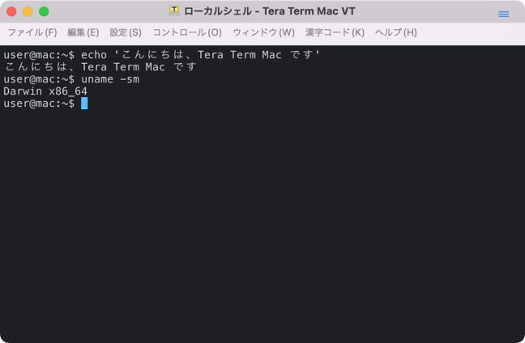

Tera Term Mac は、Mac からサーバーやネットワーク機器につないで操作するためのアプリ (ターミナルエミュレーター) です。
Windows でおなじみの Tera Term を Mac で使えるようにしたもので、SSH・Telnet・シリアル接続と TTL マクロが使えます。

はじめての方は、上から順に読んでください。1 ページ数分で読めます。
Mac 版だけで使える機能は、Mac 版だけの機能にまとめています。
くわしい説明は、Mac 版マニュアルの目次から探せます。